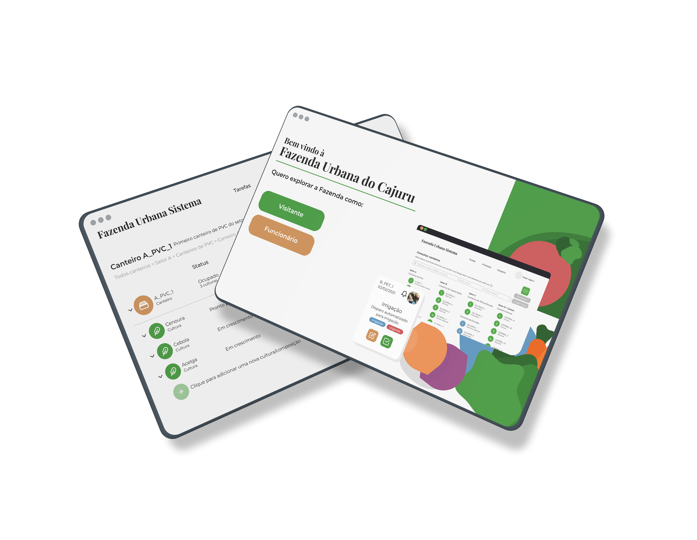
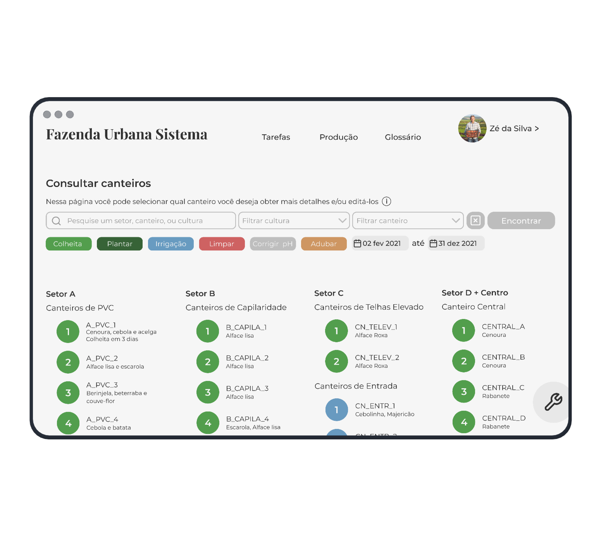
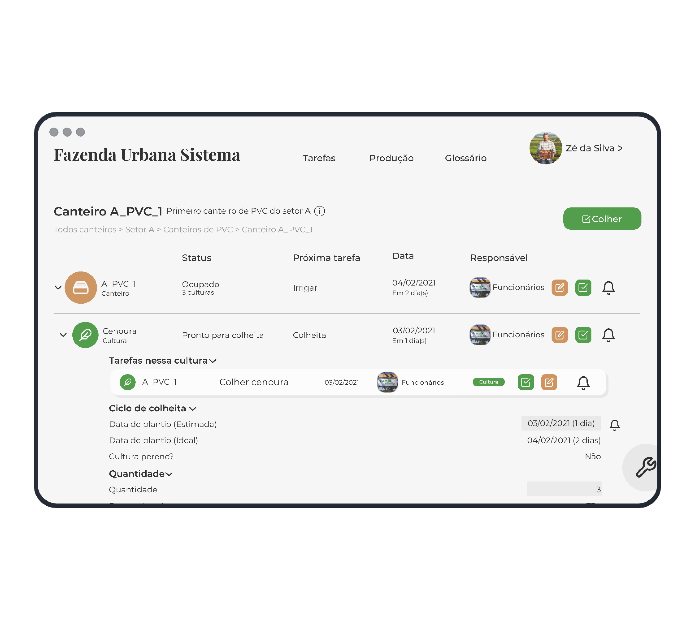
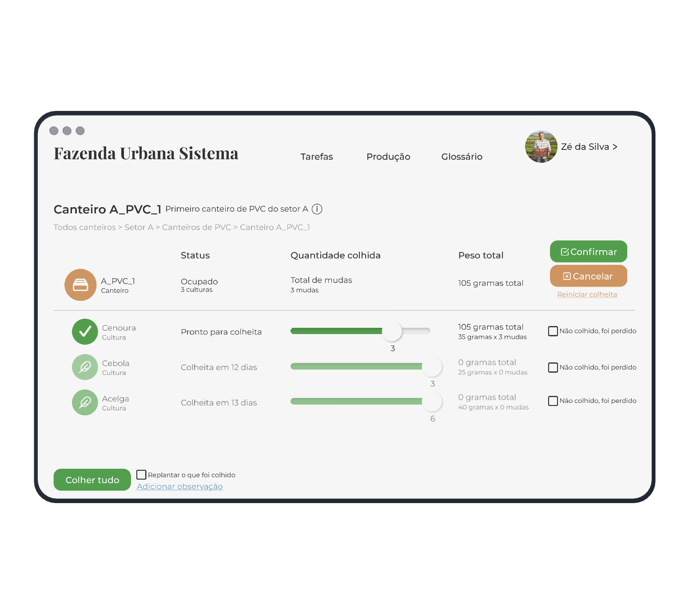
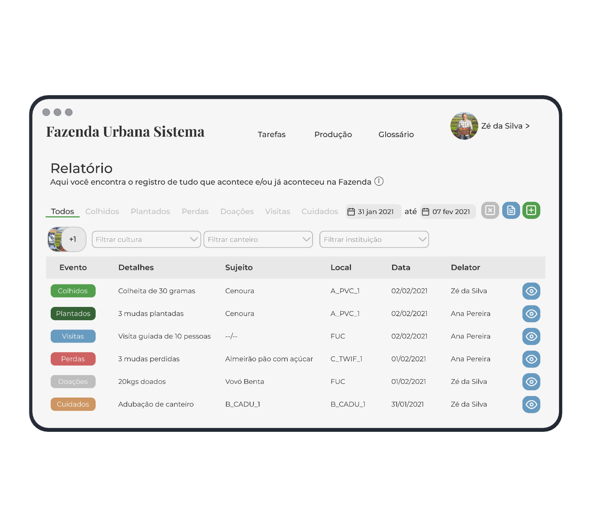

Management System FUC


From soil to digital
The Urban Farm of Cajuruis one of the first and the largest Urban Farm in Brazil, with more than 4 thousand m² and with more than 120 mapped beds where 60 crops are grown.
The academic project for the implementation of a plantation management system at Fazenda Urbana do Cajuru, involves several departments of UTFPR, with the objective of bringing this entire "ecosystem" to online management.
In this process, I played in all the roles of the team, from mapping the area in AutoDesk software to user research, projecting wireframes made of paper for high-fidelity prototypes in Figma.
Some of my works
- 
- 
- 
- 
Used softwares
- PostGreSQL
- Figma
- Miro
- Auto CAD
- Civil 3D